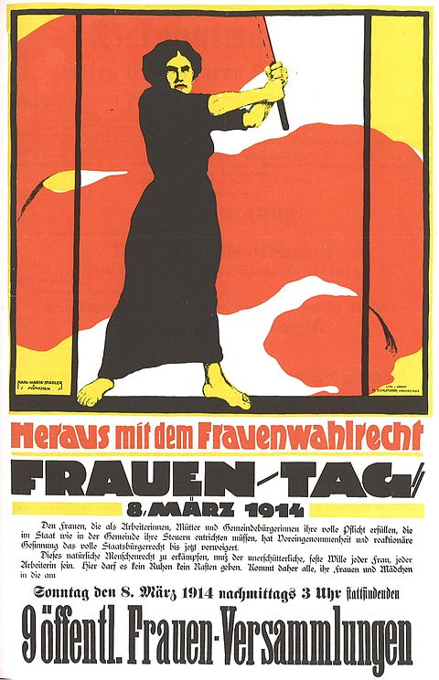
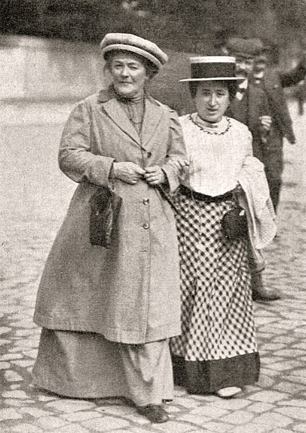
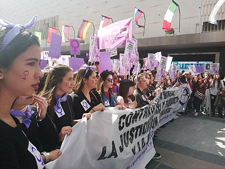
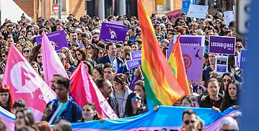
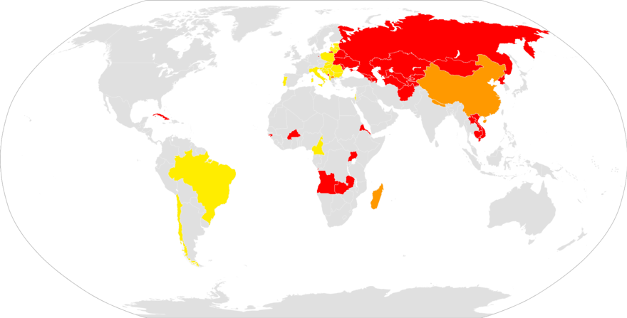
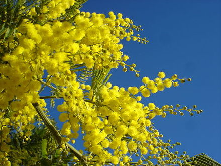

International Women's Day (IWD) is a global holiday celebrated annually on March 8 as a focal point in the women's rights movement, bringing attention to issues such as gender equality, reproductive rights, and violence and abuse against women.[3][4] Spurred on by the universal female suffrage movement, IWD originated from labor movements in North America and Europe during the early 20th century.[5][6][7]
The earliest version of the day was a "Women's Day" organized by the Socialist Party of America in New York City on February 28, 1909. This inspired German delegates at the 1910 International Socialist Women's Conference to propose "a special Women's Day" be organized annually, albeit with no set date;[8] the following year saw the first demonstrations and commemorations of International Women's Day across Europe. After women gained suffrage in Soviet Russia in 1917 (the beginning of the February Revolution), IWD was made a national holiday on March 8;[9] it was subsequently celebrated on that date by the socialist movement and communist countries. The holiday was associated with far-left movements and governments until its adoption by the global feminist movement in the late 1960s. IWD became a mainstream global holiday following its adoption by the United Nations in 1977.[10]
International Women's Day is commemorated in a variety of ways worldwide; it is a public holiday in several countries, and observed socially or locally in others to celebrate and promote the achievements of women.[11]
The UN observes the holiday in connection with a particular issue, campaign, or theme in women's rights.[6] In some parts of the world, IWD still reflects its political origins, being marked by protests and calls for radical change; in other areas, particularly in the West, it is largely sociocultural and centered on a celebration of womanhood.[12]
History
Origins
The earliest reported Women's Day observance, called "National Woman's Day",[13] was held on February 28, 1909, in New York City, organized by the Socialist Party of America[14] at the suggestion of activist Theresa Malkiel.[15] There have been claims that the day was commemorating a protest by women garment workers in New York on March 8, 1857, but researchers have declared this to be a myth intended to detach International Women's Day from its socialist origin.[16][17][18]
In August 1910, an International Socialist Women's Conference was organized in Copenhagen, Denmark, ahead of the general meeting of the Socialist Second International.[19] Inspired by American socialists, German delegates at the International Socialist Women's Conference proposed the establishment of an annual "Women's Day", although no date was specified.[8][16][20] This was meant to promote women's suffrage, and was based on the model of the annual May Day celebrations.[21][22]
The following year, on March 19, 1911, the first International Women's Day was marked by over a million people in Austria, Denmark, Germany, and Switzerland.[14] In Austria-Hungary alone, there were 300 demonstrations,[16] with women parading on the Ringstrasse in Vienna, carrying banners honoring the martyrs of the Paris Commune.[16] Across Europe, women demanded the right to vote and to hold public office, and protested against employment sex discrimination.[4]
According to the International Labour Organization, the fire at the Triangle Shirtwaist factory in New York City on March 25, 1911, “established the modern celebration of International Women’s Day in history.” The fire killed 146 workers, most of whom were women and girls - the dead were 123 women and girls and 23 men.[23][24]
IWD initially had no set date, though it was generally celebrated in late February or early March. Americans continued to observe "National Women's Day" on the last Sunday in February, while Russia observed International Women's Day for the first time in 1913, on the last Saturday in February (albeit based on the Julian calendar, as in the Gregorian calendar, the date was March 8).[25] In 1914, International Women's Day was held on March 8 for the first time in Germany, possibly because that date was a Sunday.[25] As elsewhere, Germany's observance was dedicated to women's right to vote, which German women did not win until 1918.[25][26] Also on March 8, 1914, there was a march in London from Bow to Trafalgar Square in support of women's suffrage, during which Sylvia Pankhurst was arrested in front of Charing Cross station on her way to speak in Trafalgar Square.[27][28]
The federal state of Berlin marked International Women's Day as a public holiday for the first time.
Early development, mainly in the USSR and other communist nations
On March 8, 1917, in Petrograd (February 23, 1917, on the Julian calendar), women textile workers began a demonstration that eventually engulfed the whole city, demanding "Bread and Peace"—an end to World War I, to food shortages, and to czarism.[25] This marked the beginning of the February Revolution, which alongside the October Revolution, made up the second Russian Revolution.[4][29] Revolutionary leader Leon Trotsky wrote, "23 February (8th March) was International Woman's Day and meetings and actions were foreseen. But we did not imagine that this 'Women's Day' would inaugurate the revolution. Revolutionary actions were foreseen but without a date. But in the morning, despite the orders to the contrary, textile workers left their work in several factories and sent delegates to ask for the support of the strike… which led to mass strike... all went out into the streets."[25] Seven days later, Tsar Nicholas II abdicated, and the provisional Government granted women the right to vote.[14]
In 1917, Bolsheviks Alexandra Kollontai and Vladimir Lenin made IWD an official holiday in the Soviet Union.[30] On May 8, 1965, the Presidium of the Supreme Soviet decreed International Women's Day a non-working day in the USSR, "in commemoration of the outstanding merits of Soviet women in communistic construction, in the defense of their Fatherland during the Great Patriotic War, in their heroism and selflessness at the front and in the rear, and also marking the great contribution of women to strengthening friendship between peoples, and the struggle for peace. But still, women's day must be celebrated as are other holidays."[30]
After its official adoption in Soviet Russia, IWD was predominantly celebrated in communist countries and by the communist movement worldwide before second-wave feminism. Communist leader Dolores Ibárruri led a women's march in Madrid in 1936 on the eve of the Spanish Civil War.[16] Chinese communists observed the holiday beginning in 1922,[16] though it soon gained traction across the political spectrum: In 1927, Guangzhou saw a march of 25,000 women and male supporters, including representatives of the Kuomintang, the YWCA, and labor organizations.[31] After the founding of the People's Republic of China on October 1, 1949, the State Council proclaimed on December 23 that March 8 would be made an official holiday, with women given a half-day off.[32]
Some non-communist nations observed International Women’s Day before second-wave feminism. In 1928, Australia first observed International Women’s Day, though it should be noted the observance (a rally in Sydney’s Domain) was organized by the Militant Women's Group of the Communist Party.[33] In 1956 in Singapore, Chan Choy Siong, along with Ho Puay Choo and Oh Siew Chen, created the Women's League within the People's Action Party, and that year, to recognize International Women’s Day, the League organized four rallies across Singapore, which attracted more than 2,000 people in total.[34][35]
Later observance and adoption by the United Nations
IWD remained predominantly a communist holiday until roughly 1967 when it was taken up by second-wave feminists.[16] The day re-emerged as a day of activism, and is sometimes known in Europe as the "Women's International Day of Struggle". In the 1970s and 1980s, women's groups were joined by leftists and labor organizations in calling for equal pay, equal economic opportunity, equal legal rights, reproductive rights, subsidized child care, and the prevention of violence against women.[36][37]
The United Nations began celebrating International Women's Day in 1975, which had been proclaimed the International Women's Year. In 1977, the United Nations General Assembly invited member states to proclaim March 8 as an official UN holiday for women's rights and world peace.[38] It has since been commemorated annually by the UN and much of the world, with each year's observance centered on a particular theme or issue within women's rights.
International Women's Day sparked violence in Tehran, Iran on March 4, 2007, when police beat hundreds of men and women who were planning a rally. (A previous rally for the occasion was held in Tehran in 2003.)[39] Police arrested dozens of women and some were released after several days of solitary confinement and interrogation.[40] Shadi Sadr, Mahbubeh Abbasgholizadeh and several more community activists were released on March 19, 2007, ending a fifteen-day hunger strike.[41]
Adoption by corporations
By the twenty-first century, IWD has been criticized as heavily diluted and commercialized, particularly in the West, where it is sponsored by major corporations and used to promote general and vague notions of equality, rather than radical social reforms.[42] The website internationalwomensday.com was established in 2001; it sets out a yearly theme and hashtags, unconnected with the UN project.[43] In 2009, the website was being managed by the British marketing firm Aurora Ventures with corporate sponsorship.[44][45] The website began to promote hashtags as themes for the day, which became used internationally.[46] The day was commemorated by business breakfasts and social media communications that were deemed by some social critics as reminiscent of Mother's Day greetings.[42][36]
International Women’s Day by year
2010
The United Nations International Women's Day theme for this year was "Equal Rights, Equal Opportunities: Progress for All".
On the occasion of 2010 International Women's Day the International Committee of the Red Cross (ICRC) drew attention to the hardships displaced women endure. The displacement of populations is one of the gravest consequences of today's armed conflicts. It affects women in a host of ways.[47] It has been estimated that between 70 and 80% of all internally displaced persons are women and children.[48]
2011
The United Nations theme for International Women's Day this year was "Equal Access to Education, Training, and Science and Technology: Pathway to Decent Work for Women".
Though the celebration in the West was low-key, events took place in more than 100 countries[11] on March 8, 2011, to commemorate the 100th anniversary of International Women's Day.[49] In the United States, President Barack Obama proclaimed March 2011 to be "Women's History Month", calling Americans to mark IWD by reflecting on "the extraordinary accomplishments of women" in shaping the country's history.[11] Secretary of State Hillary Clinton launched the "100 Women Initiative: Empowering Women and Girls through International Exchanges", on the eve of IWD.[50] In the run-up to 2011 International Women's Day, the Red Cross called on States and other entities not to relent in their efforts to prevent rape and other forms of sexual violence that harm the lives and dignity of countless women in conflict zones around the world every year.[51]
Australia issued an IWD 100th anniversary commemorative 20-cent coin, on which can be seen "INTERNATIONAL WOMEN'S DAY" and "1911 2011", and three figures superimposed on top of the words "CELEBRATING 100 YEARS", with those words repeated twelve times.[52]
In the context of the Egyptian revolution, in Tahrir Square, Cairo, hundreds of men came out not to support, but to harass the women who came out to stand up for their rights as the police and military stood by watching, doing nothing to stop the crowds of men.[53]
2012
The United Nations International Women's Day theme for this year was "Empower Rural Women, End Poverty, and Hunger".
Oxfam America invited people to celebrate inspiring women in their lives by sending a free International Women's Day e-Card or honoring a woman whose efforts had made a difference in the fight against hunger and poverty with Oxfam's International Women's Day award.[54]
On the occasion of International Women's Day 2012, the ICRC called for more action to help the mothers and wives of people who have gone missing during armed conflict. The vast majority of people who go missing in connection with conflict are men. As well as the anguish of not knowing what has happened to the missing husband or son, many of these women face economic and practical difficulties. The ICRC underlined the duty of parties to this conflict to search for the missing and provide information to the families.[55]
2013
The International Committee of the Red Cross (ICRC) drew attention to the plight of women in prison.[56]
The United Nations theme for International Women's Day 2013 was "A Promise is a Promise: Time for Action to End Violence Against Women".[57]
It was reported that 70% of women worldwide experience some sort of physical or sexual violence in their life. Irina Bovoka, UNESCO Director General on International Women's day 2013, stated that in order "to empower women and ensure equality, we must challenge every form of violence every time it occurs."[58] In view of the increase in violence against women and following the brutal attack on Malala Yousafzai in October 2012, the UN focused their attention on ending violence against women and made this the central theme for International Women's Day 2013. UNESCO acknowledged that violence against young girls was one of the major reasons for girls not attending school and subsequently collaborated with governments around the globe to support women's rights in providing a quality education in a safe environment.[58]
For a more cultural and artistic celebration, UNESCO also held a concert in Paris as a "Tribute to Women in Music: from the romantic to the electronics".[58]
2014
The United Nations theme for International Women's Day 2014 was “Equality for Women is Progress for All“.
2015
The United Nations theme for International Women's Day 2015 was "Empowering Women, Empowering Humanity: Picture it!"
Governments and activists around the world commemorated the 20th anniversary year of the Beijing Declaration and Platform for Action, an historic roadmap that set the agenda for realizing women's rights.[59]
2016
The United Nations theme for International Women's Day 2016 was "Planet 50–50 by 2030: Step It Up for Gender Equality".
The President of India, Shri Pranab Mukherjee, said: "On the occasion of International Women's Day, I extend warm greetings and good wishes to the women of India and thank them for their contributions over the years in the building of our nation."[60] The ministry of women and child development announced the setting up of four more one-stop crisis centers on March 8, in addition to the eight already functioning across the country.[61] Ahead of Women's Day, the national carrier Air India operated what it claimed to be the world's longest non-stop flight where the entire flight operations were handled by women, as part of International Women's Day celebrations. The flight, from Delhi to San Francisco, covered a distance of around 14,500 kilometers in around 17 hours.[62]
2017
The United Nations theme for International Women's Day 2017 was "Women in the Changing World of Work: Planet 50-50 by 2030".
In a message in support of International Women's Day, the UN Secretary-General António Guterres commented on how women's rights were being "reduced, restricted and reversed". With men still in leadership positions and a widening economic gender gap, he called for change "by empowering women at all levels, enabling their voices to be heard and giving them control over their own lives and over the future of our world".[63]
International Women's Strike, also known as Paro Internacional de Mujeres, was a global movement coordinated across over 50 countries on International Women's Day, in 2017 and 2018.[64] In the United States, the strike occurred in 2017 and was branded as "Day Without a Woman".[65] The A Day Without a Woman strike was organized by two different groups — the 2017 Women's March and a separate International Women's Strike movement — who asked that women not work that day to protest the policies of the administration of Donald Trump. Planning began before Trump's November 2016 election. The movement was adopted and promoted by the Women's March, and recommended actions inspired by the "Bodega Strike" and the Day Without Immigrants.
2018
The UN theme for International Women's Day this year was: "Time is Now: Rural and urban activists transforming women's lives".
Global marches and online campaigns such as #MeToo and #TimesUp, which originated in the United States but became popular globally, allowed many women from different parts of the world to confront injustice and speak out on issues such as sexual harassment and assault and the gender pay gap.[66]
International Women's Strike, also known as Paro Internacional de Mujeres, was a global movement coordinated across over 50 countries on International Women's Day, in 2017 and 2018.[64]
2019
The UN theme for International Women's Day this year was "Think Equal, Build Smart, Innovate for Change". The focus of the theme was on innovative ways in which to advance gender equality and the empowerment of women, particularly in the areas of social protection systems, access to public services and sustainable infrastructure.[67]
2020
The UN theme for International Women's Day this year was: "'I am Generation Equality': Realizing Women's Rights".[68] Despite the COVID-19 pandemic, street marches occurred in London, Paris, Madrid, Brussels, Moscow and other European cities.[69][70][71][72] The Aurat March in Islamabad was marred by attacks from stone throwers, after a failed attempt to have it banned as un-Islamic. In Bishkek, the capital of Kyrgyzstan, police detained dozens of marchers shortly after masked men reportedly attacked the march.[69]
2021
The 2021 UN theme for the IWD was "Women in leadership: Achieving an equal future in a COVID-19 world", highlighting the impact that girls and women worldwide had as health care workers, caregivers, innovators and community organizers during the COVID-19 pandemic.[73] The hashtag theme that year was: #ChooseToChallenge.[74]
2022
The 2022 UN theme for International Women's Day was "Gender equality today for a sustainable tomorrow", looking to highlight the contribution of women and girls around the globe, who participate in their communities promoting climate change adaptation, mitigation, and response, in order to build a more sustainable future for all.[75]
2023
The United Nations theme for International Women’s Day, 8 March 2023 (IWD 2023) was, “DigitALL: Innovation and technology for gender equality”. This theme aligned with the priority theme for the 67th Session of the United Nations Commission on the Status of Women (CSW-67), which was “Innovation and technological change, and education in the digital age for achieving gender equality and the empowerment of all women and girls”.[76]
Around the world
IWD is an official holiday in several countries worldwide, including Afghanistan,[77] Angola, Armenia,[78] Azerbaijan,[79][80] Belarus,[81] Burkina Faso,[82] Cambodia,[83] China (for women only),[84] Cuba,[85] Georgia,[86] Germany (Berlin and Mecklenburg-Western Pomerania only),[87] Guinea-Bissau, Eritrea, Kazakhstan,[88] Kyrgyzstan,[89] Laos,[90] Madagascar (for women only),[91] Moldova,[92] Mongolia,[93] Montenegro, Nepal, Russia, Tajikistan, Turkmenistan, Uganda, Ukraine,[94] Uzbekistan,[95] and Zambia.[96]
IWD is an official holiday in several countries worldwide, including Afghanistan,[77] Angola, Armenia,[78] Azerbaijan,[79][80] Belarus,[81] Burkina Faso,[82] Cambodia,[83] China (for women only),[84] Cuba,[85] Georgia,[86] Germany (Berlin and Mecklenburg-Western Pomerania only),[87] Guinea-Bissau, Eritrea, Kazakhstan,[88] Kyrgyzstan,[89] Laos,[90] Madagascar (for women only),[91] Moldova,[92] Mongolia,[93] Montenegro, Nepal, Russia, Tajikistan, Turkmenistan, Uganda, Ukraine,[94] Uzbekistan,[95] and Zambia.[96]
In some countries, such as Australia,[97] Cameroon,[98] Croatia,[99] Romania,[100] Bosnia and Herzegovina,[101] Bulgaria,[102] Vietnam,[103] and Chile,[104] IWD is not an official public holiday, but is widely observed nonetheless.
Regardless of legal status, in much of the world, it is customary for men and women to give their colleagues and loved ones flowers and gifts and show the equality towards the other gender. In some countries (such as Bulgaria and Romania) it is also observed as an equivalent of Mother's Day, where children also give small presents to their mothers and grandmothers.[100] In the Czechoslovak Socialist Republic, huge Soviet-style celebrations were held annually. After the fall of Communism, the holiday, generally considered to be one of the major symbols of the old regime, fell into obscurity. International Women's Day was re-established as an official "important day" by the Parliament of the Czech Republic in 2004[105] on the proposal of the Social Democrats and Communists. This has provoked some controversy as a large part of the public as well as the political right see the holiday as a relic of the nation's Communist past.[105]
IWD is widely celebrated in France as the Journée internationale des droits des femmes[106] (literally "International women's rights day").
In Italy, the holiday is observed by men giving yellow mimosas to women.[107][108] This originated with communist politician Teresa Mattei, who chose the mimosa in 1946 as the symbol of IWD[109] at the request of Luigi Longo.[110] Mattei felt that the French symbols of IWD, violets and lilies of the valley, were too scarce and expensive to be used in poor, rural Italian areas, so she proposed the mimosa as an alternative.[111][112][110]
In Pakistan, the first Aurat Marches were begun by women's collectives in parallel with the Pakistani #MeToo movement on International Women's Day.[113][114][115] The first march was held on 8 March 2018 in Karachi.[116][117] The Aurat March is now an annual socio-political demonstration in Pakistani cities such as Lahore, Hyderabad, Sukkur, Faisalabad, Multan, Quetta, Karachi, Islamabad and Peshawar to observe International Women's Day.[118][119]
Several countries, including Uruguay, Spain, Italy, France and Algeria, have squares or other public spaces named after 8 March in reference to International Women's Day.[120][121][122][123]